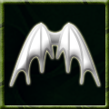

|
 |
Fly Through mastery of the winds and gravity, the monster with this ability can take to the air and fly. Flying monsters are able to travel great distances unhindered and cannot usually be attacked by those bound to the ground. Monsters cannot fly effectively underground. Command: fly This ability is based on: Other Helpful Commands
|
Fly | Regenerate | Resonance | Resurrection | Shroud of Mist | Teleport | True Sight | Chain Lightning | Cold-breathing | Cold Touch | Haste | Stun | Fireball | Poison Breath | Fire-breathing | Spit Acid | Raise | Focus | Disease Breath